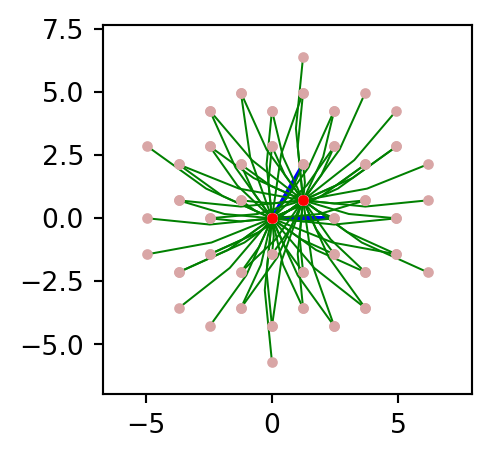
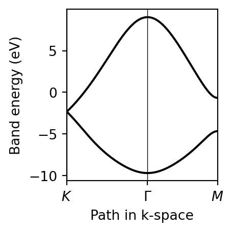

Mostrar código

$ pw.x < grafeno_scf.in > grafeno_scf.out&CONTROL
calculation = 'scf'
restart_mode = 'from_scratch'
prefix = 'grafeno'
outdir = 'tmp/'
pseudo_dir = './'
/
&SYSTEM
ibrav = 0
ecutrho = 1120
ecutwfc = 140
nat = 2
nspin = 1
ntyp = 1
occupations = 'smearing'
smearing = 'gaussian'
degauss = 2e-3
tot_charge = 0.0
vdw_corr = 'none'
/
&ELECTRONS
conv_thr = 1e-10
diagonalization = 'david'
electron_maxstep = 1000
mixing_beta = 0.5
/
&IONS
/
&CELL
/
ATOMIC_SPECIES
C 12.011 C.pbe-n-kjpaw_psl.1.0.0.UPF
ATOMIC_POSITIONS {crystal}
C 0.000000000 0.000000000 0.250000000
C 0.333333333 0.333333333 0.250000000
CELL_PARAMETERS {angstrom}
2.467306803 -0.000000000 -0.000000000
1.233653402 2.136750370 0.000000000
0.000000000 -0.000000000 19.999730020
K_POINTS {automatic}
18 18 1 0 0 0$ pw.x < grafeno_nscf.in > grafeno_nscf.out&CONTROL calculation = ‘nscf’ restart_mode = ‘from_scratch’ prefix = ‘grafeno’ outdir = ‘tmp/’ pseudo_dir = ‘./’ /
&SYSTEM ibrav = 0 ecutrho = 1120 ecutwfc = 140 nat = 2 nspin = 1 ntyp = 1 occupations = ‘smearing’ smearing = ‘gaussian’ degauss = 2e-3 tot_charge = 0.0 vdw_corr = ‘none’ nbnd = 16 /
&ELECTRONS conv_thr = 1e-10 diago_full_acc = .true. /
&IONS /
&CELL /
ATOMIC_SPECIES C 12.011 C.pbe-n-kjpaw_psl.1.0.0.UPF
ATOMIC_POSITIONS {crystal} C 0.000000000 0.000000000 0.250000000 C 0.333333333 0.333333333 0.250000000
CELL_PARAMETERS {angstrom} 2.467306803 -0.000000000 -0.000000000 1.233653402 2.136750370 0.000000000 0.000000000 -0.000000000 19.999730020
K_POINTS crystal 144 0.00000000 0.00000000 0.00000000 6.94444444e-03 0.00000000 0.08333333 0.00000000 6.94444444e-03 0.00000000 0.16666667 0.00000000 6.94444444e-03 0.00000000 0.25000000 0.00000000 6.94444444e-03 0.00000000 0.33333333 0.00000000 6.94444444e-03 0.00000000 0.41666667 0.00000000 6.94444444e-03 0.00000000 0.50000000 0.00000000 6.94444444e-03 0.00000000 0.58333333 0.00000000 6.94444444e-03 0.00000000 0.66666667 0.00000000 6.94444444e-03 0.00000000 0.75000000 0.00000000 6.94444444e-03 0.00000000 0.83333333 0.00000000 6.94444444e-03 0.00000000 0.91666667 0.00000000 6.94444444e-03 0.08333333 0.00000000 0.00000000 6.94444444e-03 0.08333333 0.08333333 0.00000000 6.94444444e-03 0.08333333 0.16666667 0.00000000 6.94444444e-03 0.08333333 0.25000000 0.00000000 6.94444444e-03 0.08333333 0.33333333 0.00000000 6.94444444e-03 0.08333333 0.41666667 0.00000000 6.94444444e-03 0.08333333 0.50000000 0.00000000 6.94444444e-03 0.08333333 0.58333333 0.00000000 6.94444444e-03 0.08333333 0.66666667 0.00000000 6.94444444e-03 0.08333333 0.75000000 0.00000000 6.94444444e-03 0.08333333 0.83333333 0.00000000 6.94444444e-03 0.08333333 0.91666667 0.00000000 6.94444444e-03 0.16666667 0.00000000 0.00000000 6.94444444e-03 0.16666667 0.08333333 0.00000000 6.94444444e-03 0.16666667 0.16666667 0.00000000 6.94444444e-03 0.16666667 0.25000000 0.00000000 6.94444444e-03 0.16666667 0.33333333 0.00000000 6.94444444e-03 0.16666667 0.41666667 0.00000000 6.94444444e-03 0.16666667 0.50000000 0.00000000 6.94444444e-03 0.16666667 0.58333333 0.00000000 6.94444444e-03 0.16666667 0.66666667 0.00000000 6.94444444e-03 0.16666667 0.75000000 0.00000000 6.94444444e-03 0.16666667 0.83333333 0.00000000 6.94444444e-03 0.16666667 0.91666667 0.00000000 6.94444444e-03 0.25000000 0.00000000 0.00000000 6.94444444e-03 0.25000000 0.08333333 0.00000000 6.94444444e-03 0.25000000 0.16666667 0.00000000 6.94444444e-03 0.25000000 0.25000000 0.00000000 6.94444444e-03 0.25000000 0.33333333 0.00000000 6.94444444e-03 0.25000000 0.41666667 0.00000000 6.94444444e-03 0.25000000 0.50000000 0.00000000 6.94444444e-03 0.25000000 0.58333333 0.00000000 6.94444444e-03 0.25000000 0.66666667 0.00000000 6.94444444e-03 0.25000000 0.75000000 0.00000000 6.94444444e-03 0.25000000 0.83333333 0.00000000 6.94444444e-03 0.25000000 0.91666667 0.00000000 6.94444444e-03 0.33333333 0.00000000 0.00000000 6.94444444e-03 0.33333333 0.08333333 0.00000000 6.94444444e-03 0.33333333 0.16666667 0.00000000 6.94444444e-03 0.33333333 0.25000000 0.00000000 6.94444444e-03 0.33333333 0.33333333 0.00000000 6.94444444e-03 0.33333333 0.41666667 0.00000000 6.94444444e-03 0.33333333 0.50000000 0.00000000 6.94444444e-03 0.33333333 0.58333333 0.00000000 6.94444444e-03 0.33333333 0.66666667 0.00000000 6.94444444e-03 0.33333333 0.75000000 0.00000000 6.94444444e-03 0.33333333 0.83333333 0.00000000 6.94444444e-03 0.33333333 0.91666667 0.00000000 6.94444444e-03 0.41666667 0.00000000 0.00000000 6.94444444e-03 0.41666667 0.08333333 0.00000000 6.94444444e-03 0.41666667 0.16666667 0.00000000 6.94444444e-03 0.41666667 0.25000000 0.00000000 6.94444444e-03 0.41666667 0.33333333 0.00000000 6.94444444e-03 0.41666667 0.41666667 0.00000000 6.94444444e-03 0.41666667 0.50000000 0.00000000 6.94444444e-03 0.41666667 0.58333333 0.00000000 6.94444444e-03 0.41666667 0.66666667 0.00000000 6.94444444e-03 0.41666667 0.75000000 0.00000000 6.94444444e-03 0.41666667 0.83333333 0.00000000 6.94444444e-03 0.41666667 0.91666667 0.00000000 6.94444444e-03 0.50000000 0.00000000 0.00000000 6.94444444e-03 0.50000000 0.08333333 0.00000000 6.94444444e-03 0.50000000 0.16666667 0.00000000 6.94444444e-03 0.50000000 0.25000000 0.00000000 6.94444444e-03 0.50000000 0.33333333 0.00000000 6.94444444e-03 0.50000000 0.41666667 0.00000000 6.94444444e-03 0.50000000 0.50000000 0.00000000 6.94444444e-03 0.50000000 0.58333333 0.00000000 6.94444444e-03 0.50000000 0.66666667 0.00000000 6.94444444e-03 0.50000000 0.75000000 0.00000000 6.94444444e-03 0.50000000 0.83333333 0.00000000 6.94444444e-03 0.50000000 0.91666667 0.00000000 6.94444444e-03 0.58333333 0.00000000 0.00000000 6.94444444e-03 0.58333333 0.08333333 0.00000000 6.94444444e-03 0.58333333 0.16666667 0.00000000 6.94444444e-03 0.58333333 0.25000000 0.00000000 6.94444444e-03 0.58333333 0.33333333 0.00000000 6.94444444e-03 0.58333333 0.41666667 0.00000000 6.94444444e-03 0.58333333 0.50000000 0.00000000 6.94444444e-03 0.58333333 0.58333333 0.00000000 6.94444444e-03 0.58333333 0.66666667 0.00000000 6.94444444e-03 0.58333333 0.75000000 0.00000000 6.94444444e-03 0.58333333 0.83333333 0.00000000 6.94444444e-03 0.58333333 0.91666667 0.00000000 6.94444444e-03 0.66666667 0.00000000 0.00000000 6.94444444e-03 0.66666667 0.08333333 0.00000000 6.94444444e-03 0.66666667 0.16666667 0.00000000 6.94444444e-03 0.66666667 0.25000000 0.00000000 6.94444444e-03 0.66666667 0.33333333 0.00000000 6.94444444e-03 0.66666667 0.41666667 0.00000000 6.94444444e-03 0.66666667 0.50000000 0.00000000 6.94444444e-03 0.66666667 0.58333333 0.00000000 6.94444444e-03 0.66666667 0.66666667 0.00000000 6.94444444e-03 0.66666667 0.75000000 0.00000000 6.94444444e-03 0.66666667 0.83333333 0.00000000 6.94444444e-03 0.66666667 0.91666667 0.00000000 6.94444444e-03 0.75000000 0.00000000 0.00000000 6.94444444e-03 0.75000000 0.08333333 0.00000000 6.94444444e-03 0.75000000 0.16666667 0.00000000 6.94444444e-03 0.75000000 0.25000000 0.00000000 6.94444444e-03 0.75000000 0.33333333 0.00000000 6.94444444e-03 0.75000000 0.41666667 0.00000000 6.94444444e-03 0.75000000 0.50000000 0.00000000 6.94444444e-03 0.75000000 0.58333333 0.00000000 6.94444444e-03 0.75000000 0.66666667 0.00000000 6.94444444e-03 0.75000000 0.75000000 0.00000000 6.94444444e-03 0.75000000 0.83333333 0.00000000 6.94444444e-03 0.75000000 0.91666667 0.00000000 6.94444444e-03 0.83333333 0.00000000 0.00000000 6.94444444e-03 0.83333333 0.08333333 0.00000000 6.94444444e-03 0.83333333 0.16666667 0.00000000 6.94444444e-03 0.83333333 0.25000000 0.00000000 6.94444444e-03 0.83333333 0.33333333 0.00000000 6.94444444e-03 0.83333333 0.41666667 0.00000000 6.94444444e-03 0.83333333 0.50000000 0.00000000 6.94444444e-03 0.83333333 0.58333333 0.00000000 6.94444444e-03 0.83333333 0.66666667 0.00000000 6.94444444e-03 0.83333333 0.75000000 0.00000000 6.94444444e-03 0.83333333 0.83333333 0.00000000 6.94444444e-03 0.83333333 0.91666667 0.00000000 6.94444444e-03 0.91666667 0.00000000 0.00000000 6.94444444e-03 0.91666667 0.08333333 0.00000000 6.94444444e-03 0.91666667 0.16666667 0.00000000 6.94444444e-03 0.91666667 0.25000000 0.00000000 6.94444444e-03 0.91666667 0.33333333 0.00000000 6.94444444e-03 0.91666667 0.41666667 0.00000000 6.94444444e-03 0.91666667 0.50000000 0.00000000 6.94444444e-03 0.91666667 0.58333333 0.00000000 6.94444444e-03 0.91666667 0.66666667 0.00000000 6.94444444e-03 0.91666667 0.75000000 0.00000000 6.94444444e-03 0.91666667 0.83333333 0.00000000 6.94444444e-03 0.91666667 0.91666667 0.00000000 6.94444444e-03
$ wannier90.x < grafenowan.win > grafenowan.woutuse_ws_distance = .true.
!---------------------------GENERAL
num_bands = 16
num_wann = 2
! exclude_bands = 1,2,3
!------------------------------CONV
num_iter = 500
iprint = 3
num_print_cycles = 50
!!! -- Disentanglement parameters -- !!!
!!! son rangos de energías sin recorrerse la EF !!!
dis_froz_min = -4.0
dis_froz_max = 0.0
dis_win_min = -10.0
dis_win_max = 14.0
!! To plot the WFs
! restart = plot
wannier_plot = true
wannier_plot_supercell = 3
write_hr = true
write_xyz = true
!----------------------------SYSTEM
begin unit_cell_cart
Ang
2.467306803 -0.000000000 -0.000000000
1.233653402 2.136750370 0.000000000
0.000000000 -0.000000000 19.999730020
end unit_cell_cart
begin atoms_frac
C 0.000000000 0.000000000 0.250000000
C 0.333333333 0.333333333 0.250000000
end atoms_frac
begin projections
C:pz
end projections
spinors = false
!----------------------------KPOINTS
! mismos puntos que en el nscf
mp_grid = 12 12 1
begin kpoints
0.00000000 0.00000000 0.00000000
0.00000000 0.08333333 0.00000000
0.00000000 0.16666667 0.00000000
0.00000000 0.25000000 0.00000000
0.00000000 0.33333333 0.00000000
0.00000000 0.41666667 0.00000000
0.00000000 0.50000000 0.00000000
0.00000000 0.58333333 0.00000000
0.00000000 0.66666667 0.00000000
0.00000000 0.75000000 0.00000000
0.00000000 0.83333333 0.00000000
0.00000000 0.91666667 0.00000000
0.08333333 0.00000000 0.00000000
0.08333333 0.08333333 0.00000000
0.08333333 0.16666667 0.00000000
0.08333333 0.25000000 0.00000000
0.08333333 0.33333333 0.00000000
0.08333333 0.41666667 0.00000000
0.08333333 0.50000000 0.00000000
0.08333333 0.58333333 0.00000000
0.08333333 0.66666667 0.00000000
0.08333333 0.75000000 0.00000000
0.08333333 0.83333333 0.00000000
0.08333333 0.91666667 0.00000000
0.16666667 0.00000000 0.00000000
0.16666667 0.08333333 0.00000000
0.16666667 0.16666667 0.00000000
0.16666667 0.25000000 0.00000000
0.16666667 0.33333333 0.00000000
0.16666667 0.41666667 0.00000000
0.16666667 0.50000000 0.00000000
0.16666667 0.58333333 0.00000000
0.16666667 0.66666667 0.00000000
0.16666667 0.75000000 0.00000000
0.16666667 0.83333333 0.00000000
0.16666667 0.91666667 0.00000000
0.25000000 0.00000000 0.00000000
0.25000000 0.08333333 0.00000000
0.25000000 0.16666667 0.00000000
0.25000000 0.25000000 0.00000000
0.25000000 0.33333333 0.00000000
0.25000000 0.41666667 0.00000000
0.25000000 0.50000000 0.00000000
0.25000000 0.58333333 0.00000000
0.25000000 0.66666667 0.00000000
0.25000000 0.75000000 0.00000000
0.25000000 0.83333333 0.00000000
0.25000000 0.91666667 0.00000000
0.33333333 0.00000000 0.00000000
0.33333333 0.08333333 0.00000000
0.33333333 0.16666667 0.00000000
0.33333333 0.25000000 0.00000000
0.33333333 0.33333333 0.00000000
0.33333333 0.41666667 0.00000000
0.33333333 0.50000000 0.00000000
0.33333333 0.58333333 0.00000000
0.33333333 0.66666667 0.00000000
0.33333333 0.75000000 0.00000000
0.33333333 0.83333333 0.00000000
0.33333333 0.91666667 0.00000000
0.41666667 0.00000000 0.00000000
0.41666667 0.08333333 0.00000000
0.41666667 0.16666667 0.00000000
0.41666667 0.25000000 0.00000000
0.41666667 0.33333333 0.00000000
0.41666667 0.41666667 0.00000000
0.41666667 0.50000000 0.00000000
0.41666667 0.58333333 0.00000000
0.41666667 0.66666667 0.00000000
0.41666667 0.75000000 0.00000000
0.41666667 0.83333333 0.00000000
0.41666667 0.91666667 0.00000000
0.50000000 0.00000000 0.00000000
0.50000000 0.08333333 0.00000000
0.50000000 0.16666667 0.00000000
0.50000000 0.25000000 0.00000000
0.50000000 0.33333333 0.00000000
0.50000000 0.41666667 0.00000000
0.50000000 0.50000000 0.00000000
0.50000000 0.58333333 0.00000000
0.50000000 0.66666667 0.00000000
0.50000000 0.75000000 0.00000000
0.50000000 0.83333333 0.00000000
0.50000000 0.91666667 0.00000000
0.58333333 0.00000000 0.00000000
0.58333333 0.08333333 0.00000000
0.58333333 0.16666667 0.00000000
0.58333333 0.25000000 0.00000000
0.58333333 0.33333333 0.00000000
0.58333333 0.41666667 0.00000000
0.58333333 0.50000000 0.00000000
0.58333333 0.58333333 0.00000000
0.58333333 0.66666667 0.00000000
0.58333333 0.75000000 0.00000000
0.58333333 0.83333333 0.00000000
0.58333333 0.91666667 0.00000000
0.66666667 0.00000000 0.00000000
0.66666667 0.08333333 0.00000000
0.66666667 0.16666667 0.00000000
0.66666667 0.25000000 0.00000000
0.66666667 0.33333333 0.00000000
0.66666667 0.41666667 0.00000000
0.66666667 0.50000000 0.00000000
0.66666667 0.58333333 0.00000000
0.66666667 0.66666667 0.00000000
0.66666667 0.75000000 0.00000000
0.66666667 0.83333333 0.00000000
0.66666667 0.91666667 0.00000000
0.75000000 0.00000000 0.00000000
0.75000000 0.08333333 0.00000000
0.75000000 0.16666667 0.00000000
0.75000000 0.25000000 0.00000000
0.75000000 0.33333333 0.00000000
0.75000000 0.41666667 0.00000000
0.75000000 0.50000000 0.00000000
0.75000000 0.58333333 0.00000000
0.75000000 0.66666667 0.00000000
0.75000000 0.75000000 0.00000000
0.75000000 0.83333333 0.00000000
0.75000000 0.91666667 0.00000000
0.83333333 0.00000000 0.00000000
0.83333333 0.08333333 0.00000000
0.83333333 0.16666667 0.00000000
0.83333333 0.25000000 0.00000000
0.83333333 0.33333333 0.00000000
0.83333333 0.41666667 0.00000000
0.83333333 0.50000000 0.00000000
0.83333333 0.58333333 0.00000000
0.83333333 0.66666667 0.00000000
0.83333333 0.75000000 0.00000000
0.83333333 0.83333333 0.00000000
0.83333333 0.91666667 0.00000000
0.91666667 0.00000000 0.00000000
0.91666667 0.08333333 0.00000000
0.91666667 0.16666667 0.00000000
0.91666667 0.25000000 0.00000000
0.91666667 0.33333333 0.00000000
0.91666667 0.41666667 0.00000000
0.91666667 0.50000000 0.00000000
0.91666667 0.58333333 0.00000000
0.91666667 0.66666667 0.00000000
0.91666667 0.75000000 0.00000000
0.91666667 0.83333333 0.00000000
0.91666667 0.91666667 0.00000000
end kpointspythtb.path = [[2/3,1/3,0],[0,0,0],[0.5,0,0]]
k_label=(r'$K$', r'$\Gamma$',r'$M$')
(k_vec,k_dist,k_node)=my_model.k_path(path,1001,report=False)
evals=my_model.solve_all(k_vec)
fig, ax = plt.subplots()
for i in range(evals.shape[0]):
ax.plot(k_dist,evals[i],"k-")
for n in range(len(k_node)):
ax.axvline(x=k_node[n],linewidth=0.5, color='k')
ax.set_xlabel("Path in k-space")
ax.set_ylabel("Band energy (eV)")
ax.set_xlim(k_dist[0],k_dist[-1])
ax.set_xticks(k_node)
ax.set_xticklabels(k_label)
fig.tight_layout()